1I
| Starting Motor Inspection |
Starting Motor Operation Check
Sparks resulting from a short circuit between the positive (+) and negative (–) terminals during connections to the battery may cause burns.
Be careful not to short-circuit the positive (+) and negative (–) cables, and connect them only to the correct terminals.
NOTICE:
If battery power is applied too long in any of the following tests, coil of the magnetic switch may burn.
Each test must be completed within 3 to 5 seconds to avoid burning of the coil.
1)Perform pull-in test as follows.
a)Disconnect lead wire (3) from “M” terminal (2).
b)Connect battery to magnetic switch as shown in figure.
c)Check that plunger and pinion moves outward.
If plunger and pinion does not move, replace magnetic switch.

If plunger and pinion does not move, replace magnetic switch.
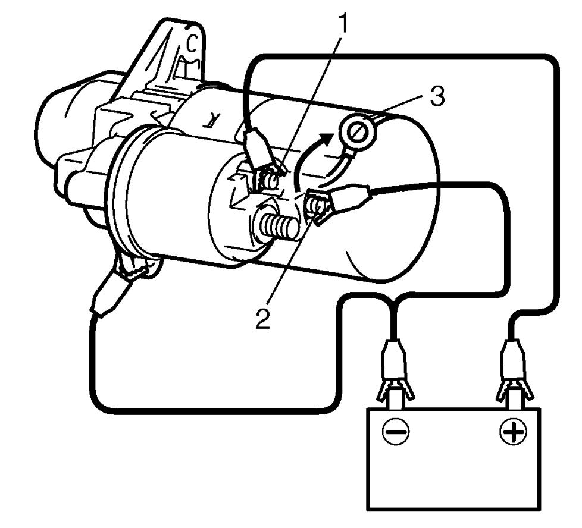
 "Expand image")
| 1. | “S” terminal |
2)Perform hold-in test as follows.
a)From the state of Step 1) with plunger and pinion in “out” position, disconnect negative (–) lead from “M” terminal.
b)Check that plunger and pinion remains in “out” position.
If plunger and pinion returns inward, replace magnetic switch.
If plunger and pinion returns inward, replace magnetic switch.
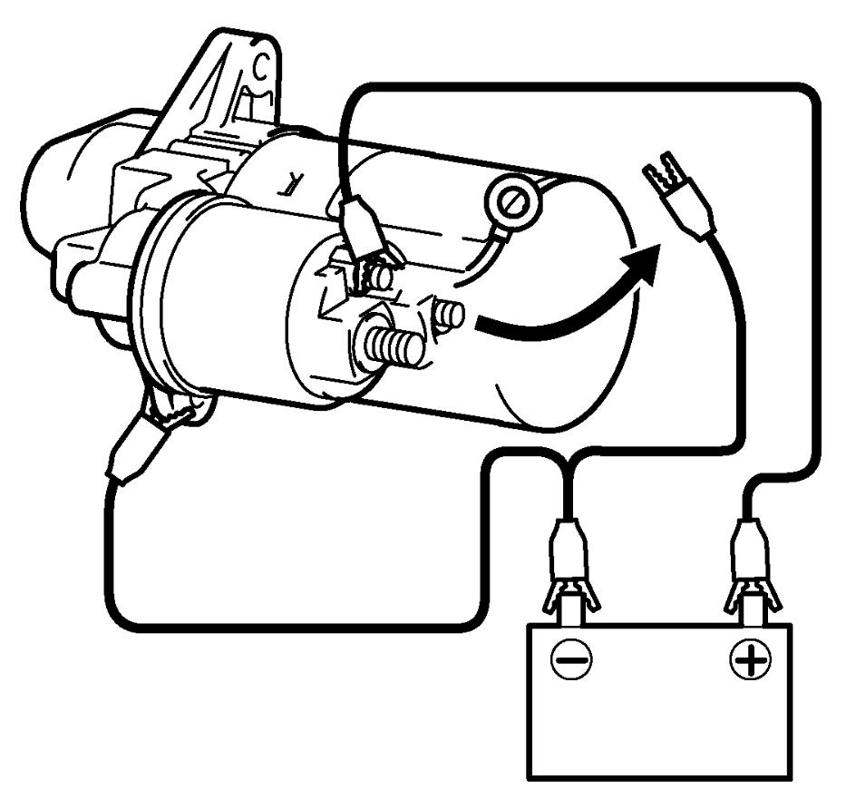
 "Expand image")
3)Perform plunger and pinion return test as follows.
a)From the state of Step 2) with plunger and pinion in “out” position, disconnect negative (–) lead from starting motor body.
b)Check that plunger and pinion returns inward. If plunger and pinion does not return, replace magnetic switch.
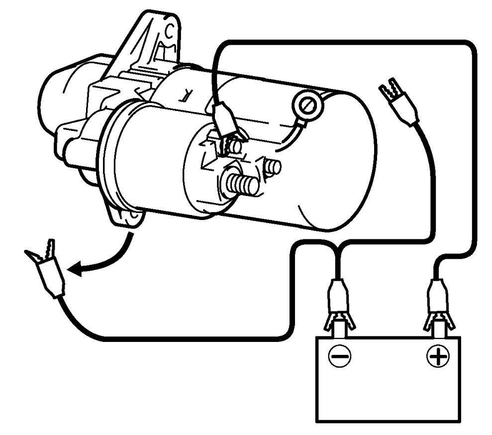
 "Expand image")
4)Perform no-load performance test as follows.
 CAUTION:
CAUTION:
If the cable used for the test is not adequately thick, the cable may become extremely hot due to large current flowing through it and you could get burned.
Use a cable with thickness equal to or larger than the cable used between the vehicle’s battery and the starter.
a)Fix starting motor with vice or the like.
b)Connect battery and ammeter to starting motor as shown in figure.
c)Check that starting motor rotates smoothly and steadily with pinion moving out.
d)Check that ammeter indicates specified current.
If check result is not as specified, repair or replace starting motor.
If check result is not as specified, repair or replace starting motor.
Specified current (No-load performance test)
Non-ENG A-STOP model: 75 A MAX. at 11.6 V
ENG A-STOP model: 57 A MAX. at 11.1 V
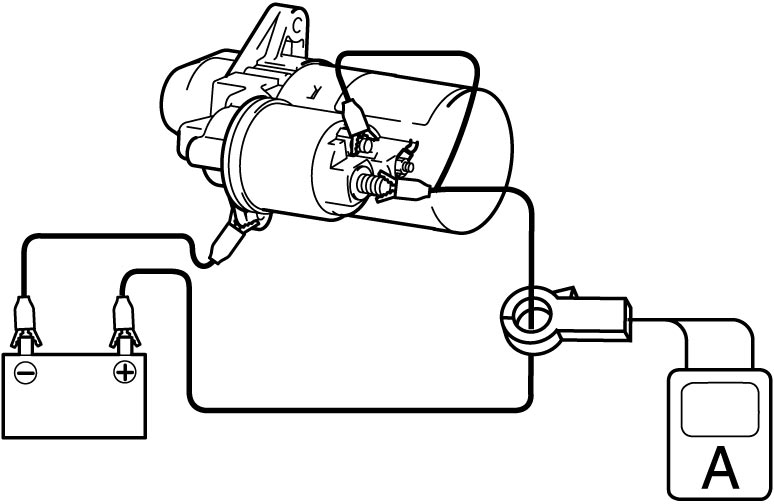
 "Expand image")
Plunger
Check plunger for wear. Replace magnetic switch if defective.
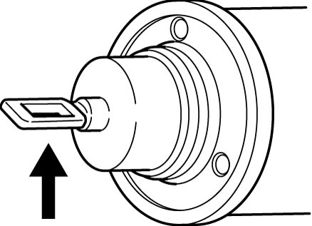
 "Expand image")
Magnetic Switch
Check that plunger quickly returns to its original position when plunger is pushed in with a finger and released. If check result is not OK, replace magnetic switch.
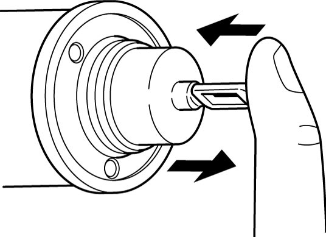
 "Expand image")
Pull-in coil open circuit test
Check for continuity between magnetic switch “S” terminal (1) and “M” terminal (2). If there is no continuity, replace magnetic switch.
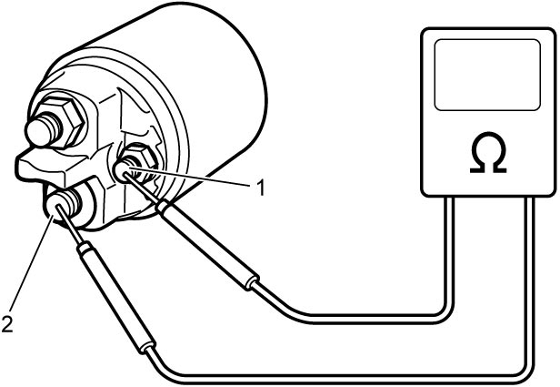
 "Expand image")
Hold-in coil open circuit test
Check for continuity between magnetic switch “S” terminal (1) and coil case. If there is no continuity, replace magnetic switch.
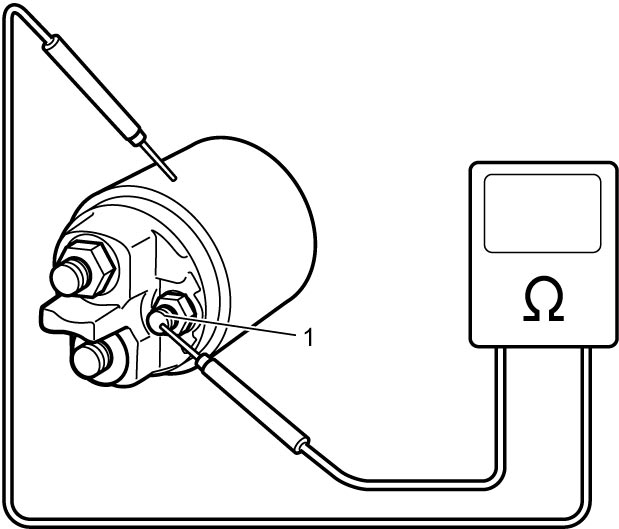
 "Expand image")
Starter End Frame Bushing
Check starter end frame bushing for wear or damage. If check result is not OK, replace starting motor assembly.
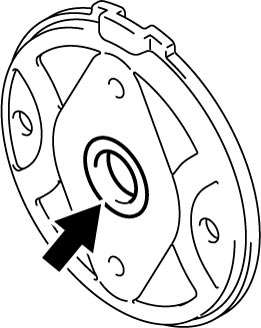
 "Expand image")
Brush
Install brushes to each brush holder and check for smooth movement.
Spring
Check brush springs for wear, damage or other abnormal conditions. Replace brush assembly if defective.
Brush Holder
•Check brush holder for brush movement problems, distortion, and dirt on sliding surface.
Clean or correct brush assembly if defective.
•Check for continuity between insulated brush (positive (+) side) and grounded brush (negative (–) side).
If there is continuity, replace brush assembly.
Clean or correct brush assembly if defective.
•Check for continuity between insulated brush (positive (+) side) and grounded brush (negative (–) side).
If there is continuity, replace brush assembly.
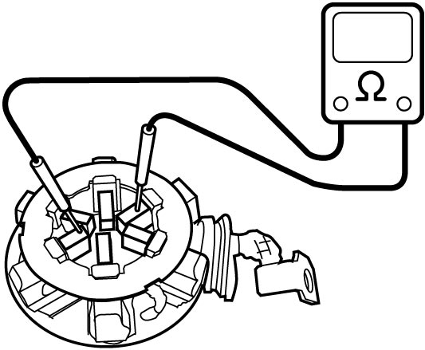
 "Expand image")
Armature
•Check commutator for dirt or burn. Correct commutator with sandpaper or lathe, if defective.
•Check insulation between commutator and armature core. If there is continuity, replace armature.
•Check for continuity between segments. If there is no continuity at any test point, replace armature.
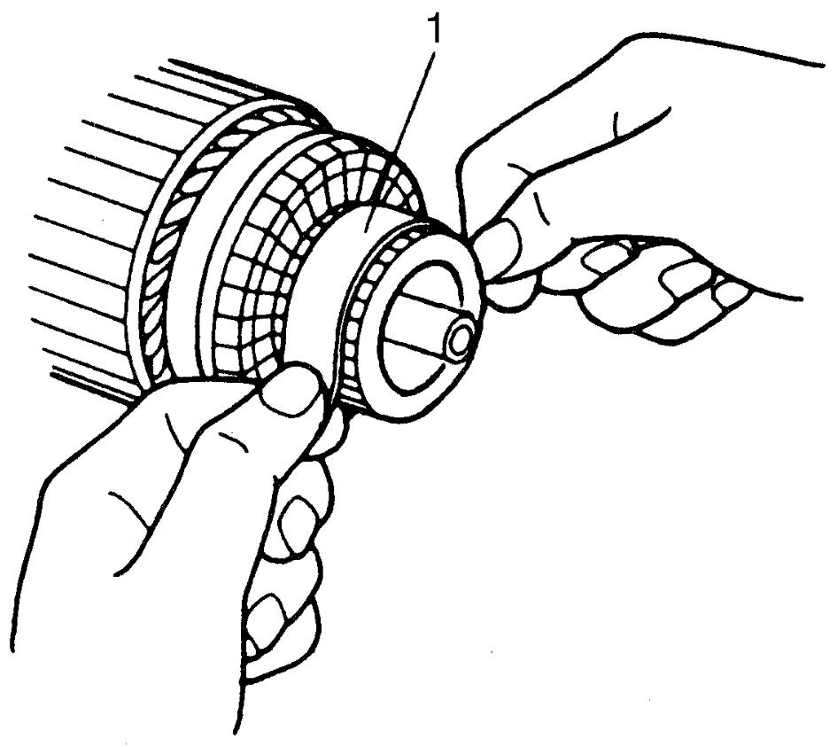
 "Expand image")
| 1. | Sandpaper of #300 – 400 |
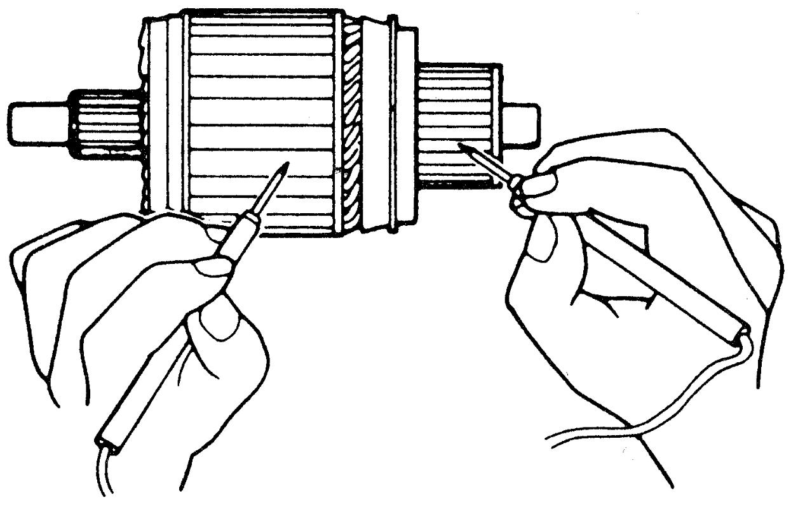
 "Expand image")
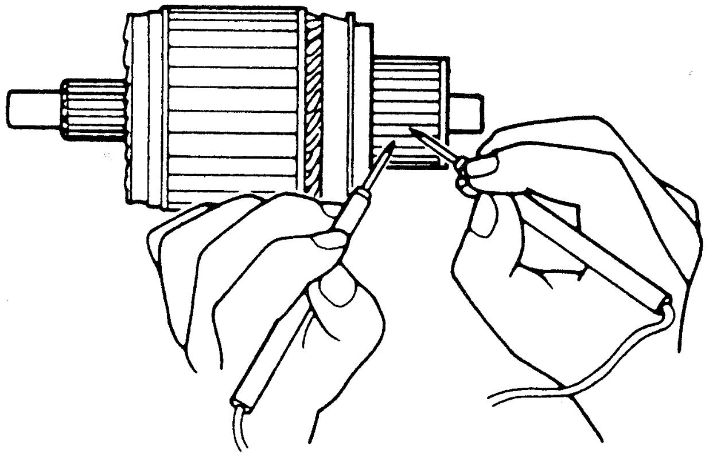
 "Expand image")
Gear
Check internal gear and planetary gears for wear, damage and other abnormal conditions. Replace armature or gear shaft assembly if defective.
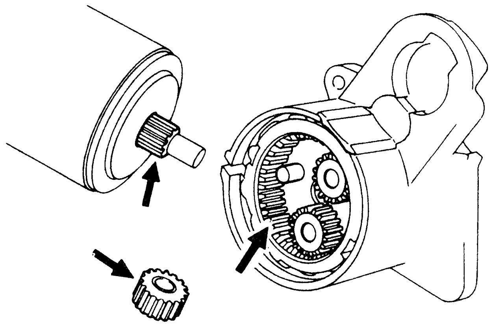
 "Expand image")
Pinion and Overrunning Clutch
•Check pinion for wear, damage and other abnormal conditions.
•Check that clutch locks when turned in normal rotation direction and rotates freely when turned in opposite direction. Replace overrunning clutch if defective.
•Check spline teeth for wear or damage. Replace overrunning clutch if defective.
•Check pinion for smooth movement.
•Check that clutch locks when turned in normal rotation direction and rotates freely when turned in opposite direction. Replace overrunning clutch if defective.
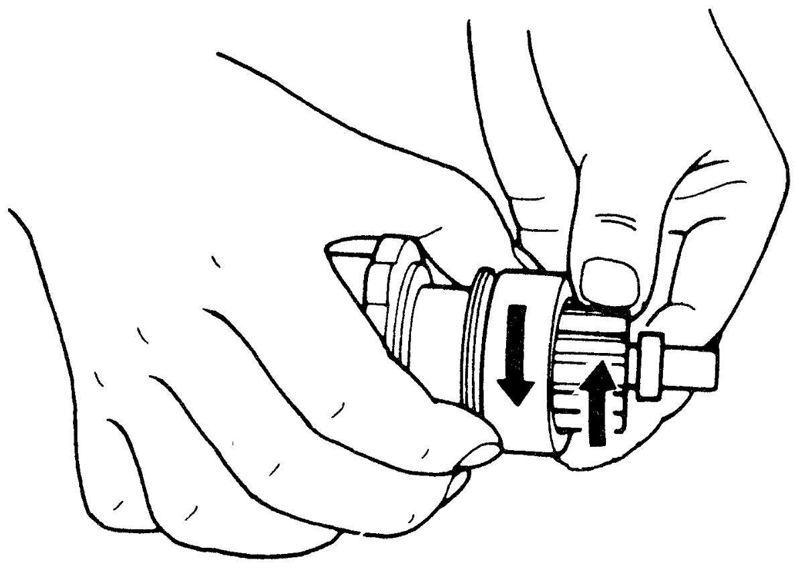
 "Expand image")
•Check pinion for smooth movement.
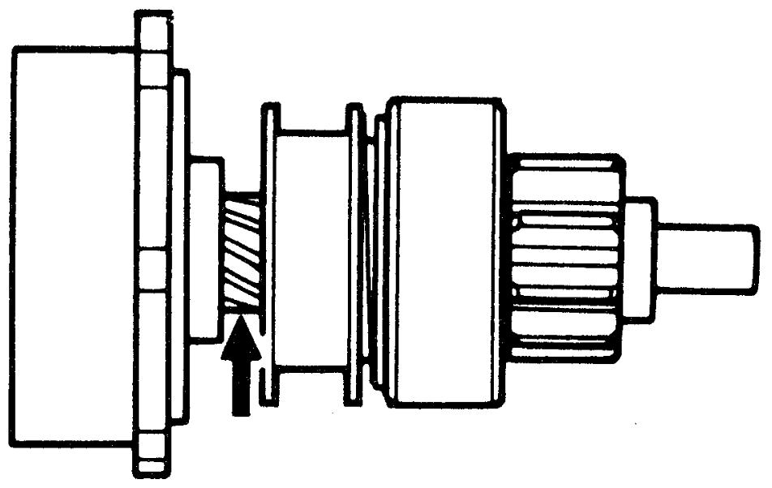
 "Expand image")
Starter Housing Needle Bearing
Check needle bearing for wear or damage. Replace starting motor assembly if defective.
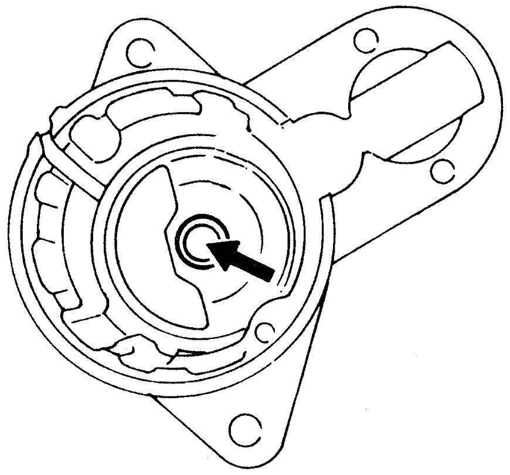
 "Expand image")